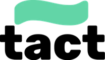
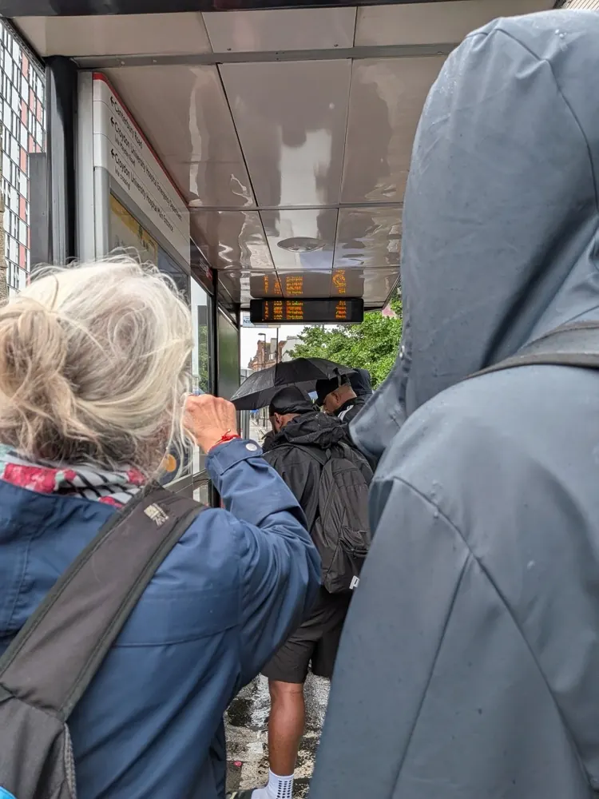

TACT: Total Communication Technologies
- Funding
- UKRI Future Leaders Fellowship
- Partners
- Microsoft Research, Tobii Dynavox, Transport for London, Hidden Disabilities, Aphasia Re-Connect, Dyscover, Speech and Language UK and SayAphasia, with City St George’s, University of London
- Dates
- 2025 – present
- My role
- Principal Investigator
TACT re-imagines technology-mediated communication through the lens of people with communication disabilities. Rather than focusing only on speech, it supports total communication – verbal and non-verbal – across assistive technologies and everyday platforms such as videoconferencing. Working with people with aphasia and young people with speech and language needs as co-designers, we are exploring the potential and the risks of AI, and the role of discreet, wearable devices such as smartwatches and smart glasses.
